The Inn Way to the Yorkshire Dales
Day 5 : West Burton to Kettlewell
Home **
Previous Day **
Next Day
Soon after leaving West Burton the next morning we were on a minor road with beautiful
views of the Valley of Walden. The idyllic scene hasn't
changed for centuries, with its scattered field barns.
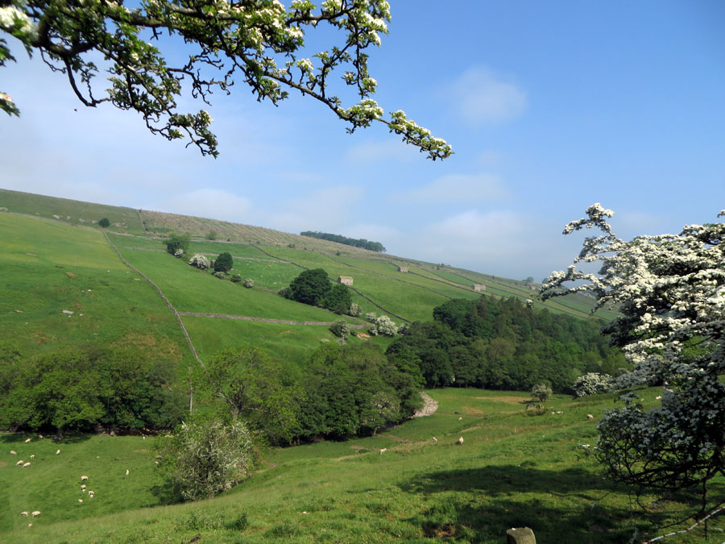
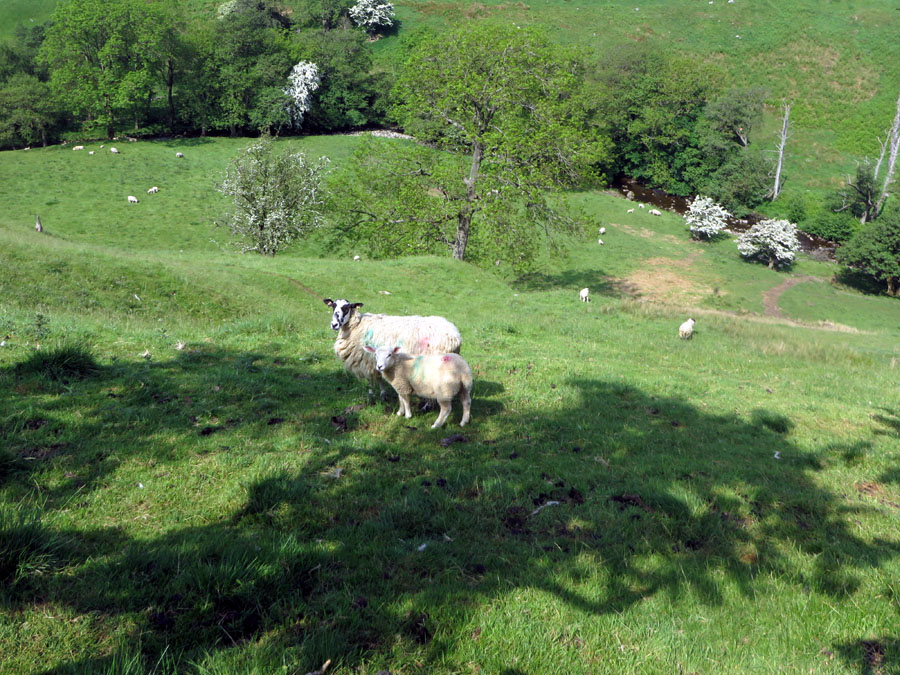
After turning left up a farm track, we encountered a situation which was new to
us. There was a calf outside the field that he probably should have been
in.
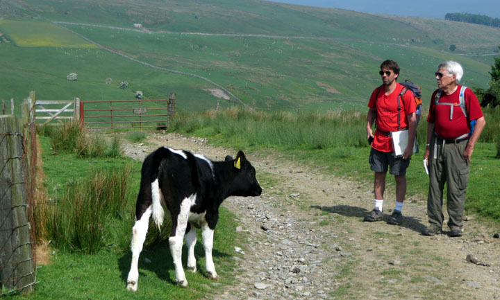
We walked on up the track, and the calf walked with us, noisily telling us that
he wanted to go back in with his friends and playmates. Not too much
farther along we came to a gate. We managed to untie the rope that
fastened it and let the calf back in. We hope that was the right thing to
do!
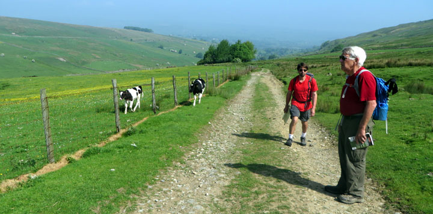
The sketch map in our book marked an "old railway carriage", so we weren't
surprised to see it. But that didn't diminish our curiosity as to how it
got there, or why.
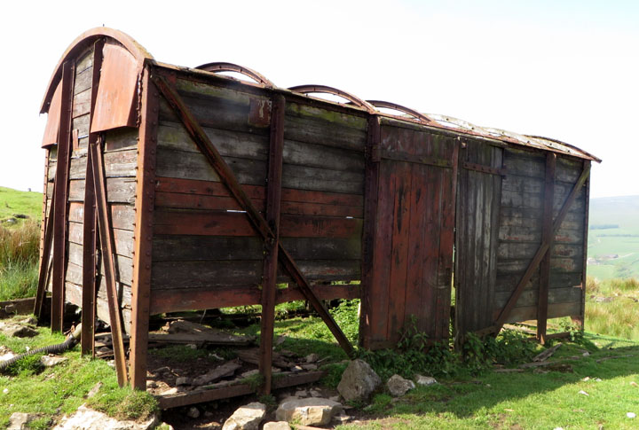
After we climbed a bit more, we were once again crossing moorland. There
was often lots of cotton-grass.
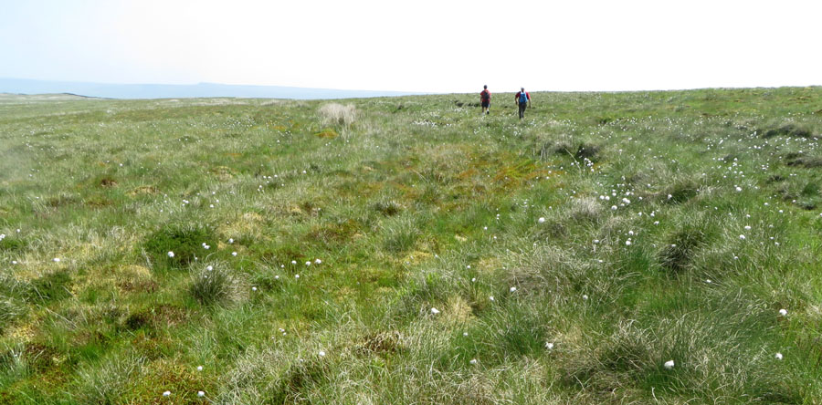
Sometimes we were in boggy areas, with their usual reedy grass.
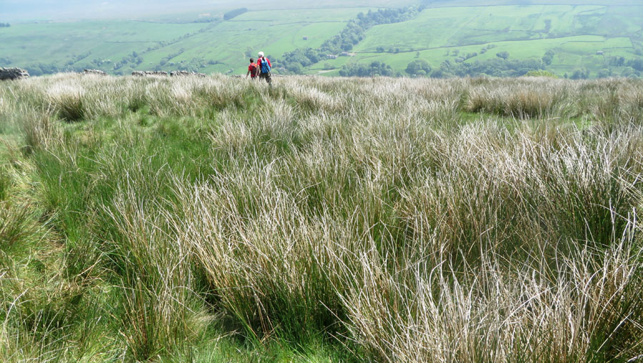
We were happy to arrive at the Thwaite Arms at lunchtime. This is in the
tiny, remote village of Horsehouse. As the name suggests, the village and
pub were an overnight stop on a packhorse and stagecoach route in past
centuries.
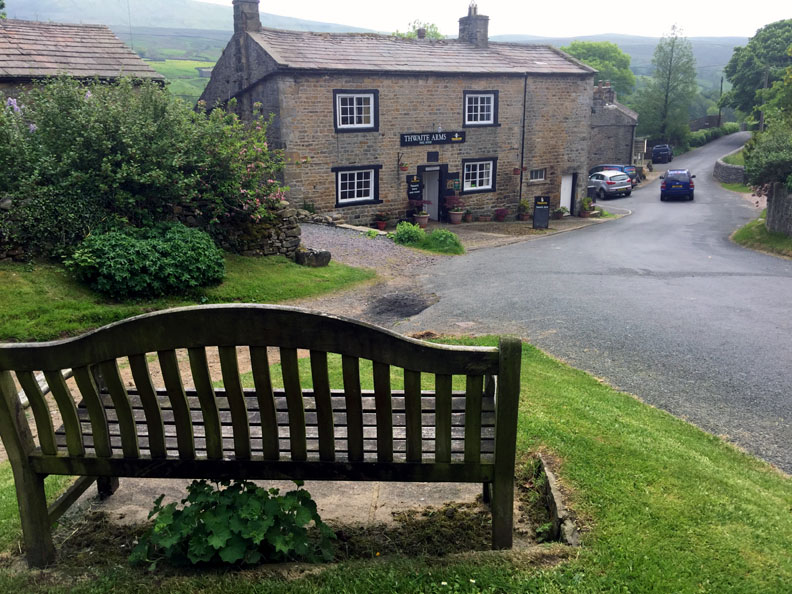
The present landlady is a good gardener and has made a pleasant beer garden out
back.
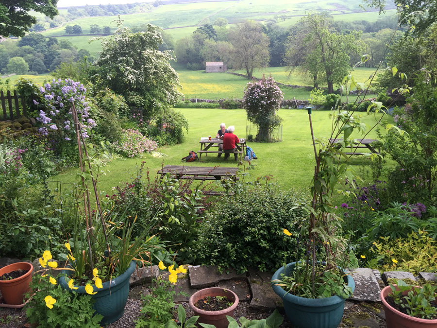
In the afternoon we traversed Coverdale. There were first fields (here shared
with Highland cattle)
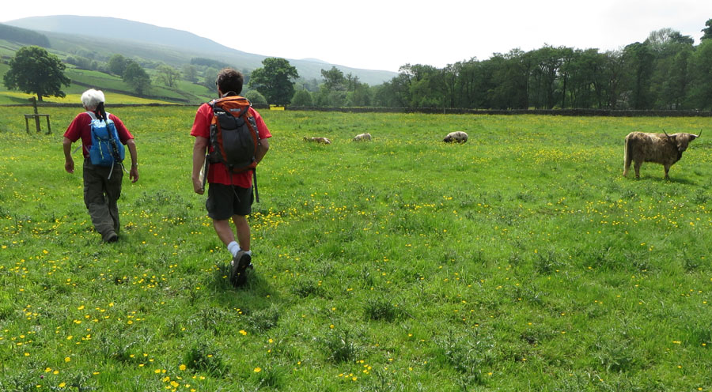
and then a long hot uphill walk along a road. We were glad to get to
Hunters Stone, which we knew was near the top. This is a guidestone, put
there to help hunters, and monks from Coverham Abbey, find their way over the
moor.
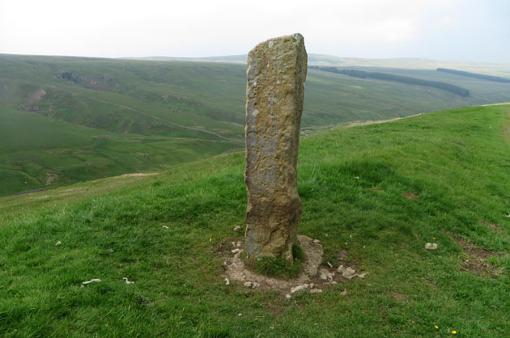
Soon after, we were back on pleasant paths across the moor, and then on a walled
"green lane" which took us from the moor all the way down into Kettlewell.
Green lanes are ancient unpaved public roads, many of which are now
unfortunately popular with off-road recreational drivers.
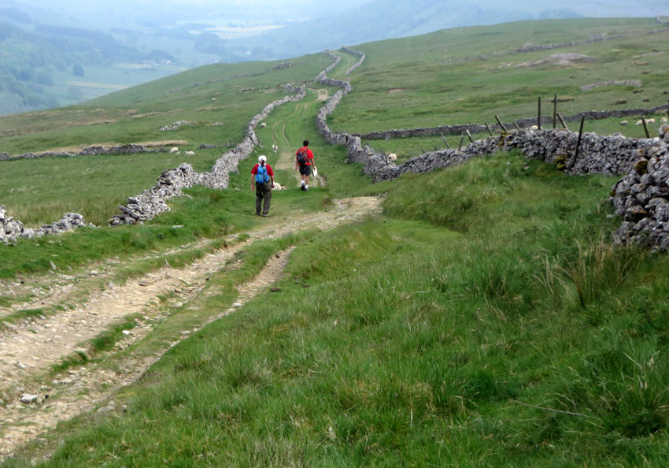
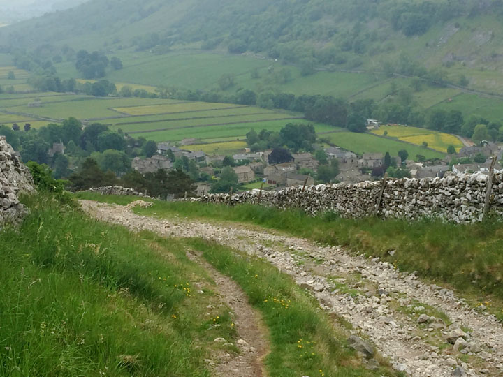
Finally, our home for the night in Kettlewell, the Blue Bell Inn.
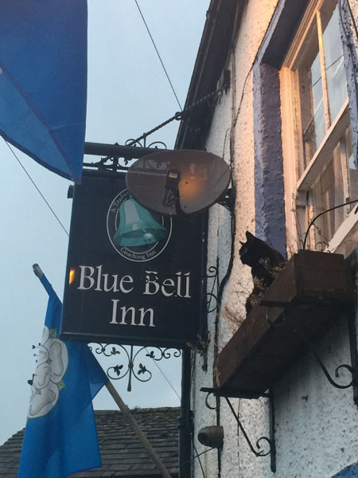
Home **
Previous Day **
Next Day